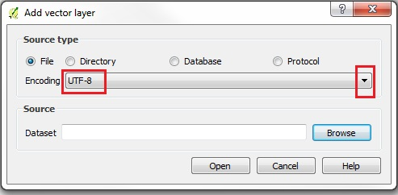
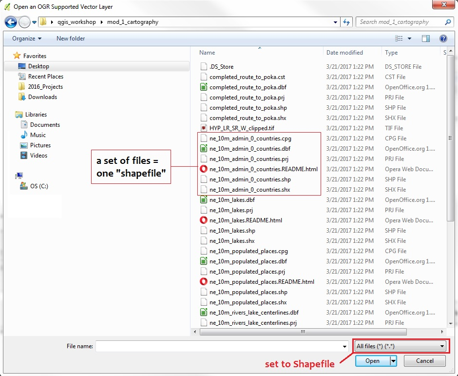
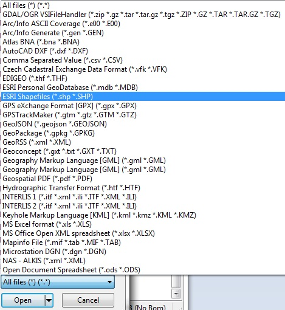
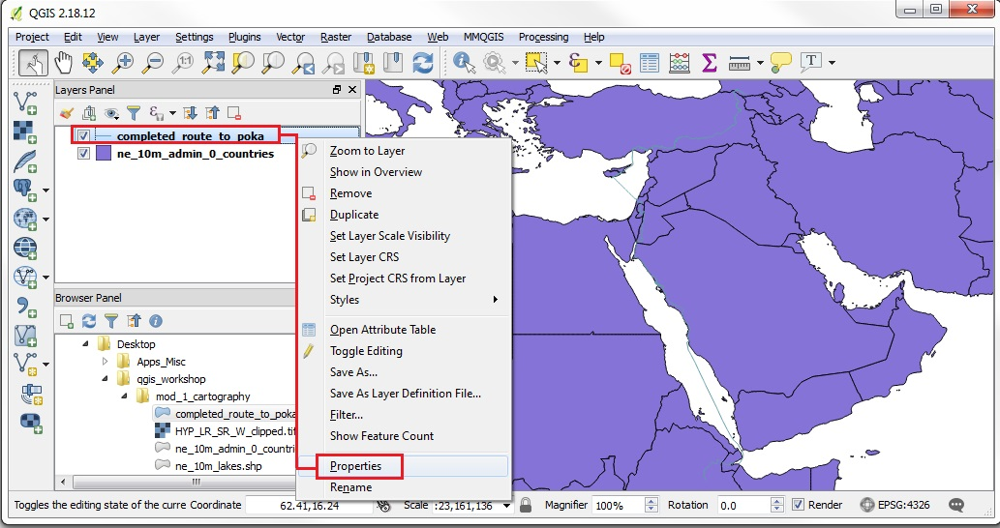

Add Data, Pan, Zoom, Identify
We must first add a layer of data to use the map navigation controls in QGIS. Go to this download folder, then right-click and save the file workshop_data_*.zip to your desktop. Right-click on the .zip file to "Extract all files" (on Windows) to your desktop. Or on Mac, move the unzipped folder to your desktop. You should now have a "qgis_workshop" folder on your desktop.
Some other useful datasets to start with are the global coverages provided by Natural Earth and data for specific countries provided by GADM. You can download Shapefiles from these providers to use in QGIS.
In QGIS click the ADD VECTOR LAYER button.

Notice that the Source Type will default to SYSTEM encoding. QGIS is VERY good at handling various character set encodings (such as multi-byte Chinese & Japanese, or UTF-8)! Simply declare the correct codepage at the time of opening the layer, and QGIS will handle the rest! For our example, set encoding = UTF-8.

In the Source section, click Browse and navigate to your Desktop\qgis_workshop\mod_1 folder. You will see a list of files, many with the same names, but different extensions.

At the bottom right, reset the All Files type to "Esri Shapefiles"

Now the files for selection will be limited to the Shapefiles (ie, files with the .shp extension only). Select the file containing Natural Earth countries called "ne_10m_admin_0_countries.shp" Note on the filename: this nomenclature is shorthand for Natural Earth, 1:10million scale, administrative unit boundaries, at the top level for the countries of the world.

Once the .shp file appears in the Dataset form, you can click OPEN to add the vector layer to your QGIS project.

By default when you add a vector layer to a blank project, the Map View will default to the Projection (CRS Coordinate Reference System) of the data being added, and it will zoom to the full spatial extent of the layer.
In this case, the countries of the world, shown in a rectangular grid, which is perhaps the most common CRS, called WGS84.

Now we will add another vector layer with the BROWSER PANEL. In the Browser Panel navigate through the filesystem to find your Desktop and the qgis_workshop\mod_1 folder. Then simply drag and drop a .shp file onto the Map View panel. We will drag the file called "completed_route_to_poka.shp"

You will see that the layer has been added because it appears in the Layers Panel. Note that the Map View remains at the same extent, when additional layers are added to the Project. In order to zoom to the new layer, RIGHT-CLICK on that layer in the layer list, and select the option Zoom to Layer.
Now the Map View extent will be zoomed in to the extent of the "poka" layer.

If it is not already active, make sure the MAP NAVIGATION TOOLBAR is active, then click on the PAN tool. Move the hand-shaped cursor over the MAP view, then click and drag to PAN the map. Letting go of the click button will set the MAP view the new position.
Now click the ZOOM tool. With the ZOOM tool active, both click and drag a box shape over an area of the map. Letting go of the click button will zoom into the extent of the selection.
Now make the ZOOM OUT tool active. Click any spot on the map view and the view will zoom out, centered on the selected point.
To use the IDENTIFY tool, first right-click on the TOOLBAR AREA and make sure the ATTRIBUTES toolbar is active. IMPORTANT NOTE: You must make the layer ACTIVE for which you want to identify a feature! So first click on the Natural Earth layer (ne_10m_admin_0_countries) in the Layers Panel
Now you will can make the IDENTIFY tool active (a white letter "i" in a small blue circle) by clicking on that tool in the ATTRIBUTES Toolbar.
Once the IDENTIFY tool is engaged, move your cursor to a spot on the MAP VIEW that has NOT got any features (a blank spot) and click on it. You will see a message in the lower left part of the STATUS BAR, "no features at this position found." In addition, the IDENTIFY RESULTS panel will open on the right side of your MAP VIEW.
Now try clicking on a area of the MAP VIEW that DOES have features in the ACTIVE layer. You should see a small pop-up window containing attribute information for the feature that was clicked on.
Note that you might have to SCROLL to the right of the IDENTIFY RESULTS panel to see the attributes of the feature, in addition to the field names.
Or you can POPUP the IDENTIFY RESULTS into a separate window to resize it and view both the field names and attributes, using the little POPUP toggle on the upper right.
In the example shown, Turkey was IDENTIFIED. To deselect the results, you can click the CLEAR RESULTS button at the top of the IDENTIFY RESULTS panel, or you can CLICK on an area where the ACTIVE LAYER has no features in the Map View.
Proceed to the SELECTION tutorial